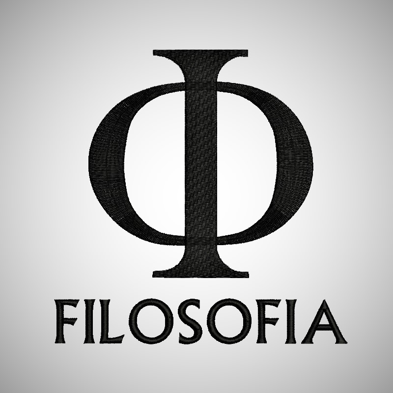

Detalhe do Curso
ADMINISTRAÇÃO BACHARELADO
- O curso de ADMINISTRAÇÃO é 100% PRESENCIAL e usa como ferramenta de comunicação o Google For Education G Suite, à qual a comunidade acadêmica terá pleno acesso.
- O curso de ADMINISTRAÇÃO da Faculdade oferece aos alunos formação necessária paro o exercício da profissão e preocupa-se com o desenvolvimento do senso crítico, reflexivo, aberto às inovações e incentiva a produção criativa e a pesquisa acadêmica.
- O corpo docente é composto por 100% de professores mestres ou doutores.
DIREITO BACHARELADO
- O curso de DIREITO da Faculdade oferece aos alunos formação necessária paro o exercício da profissão e preocupa-se com o desenvolvimento do senso crítico, reflexivo, aberto às inovações e incentiva a produção criativa e a pesquisa acadêmica.
- O corpo docente é composto por 100% de professores mestres ou doutores.
- Além de altamente qualificado, o corpo docente procura estar sempre atento às novas tecnologias, aliando os conhecimentos teóricos à prática profissional.
- As instalações físicas são tradicionais, de uma beleza ímpar, e tombadas pelo Patrimônio Histórico.
- A biblioteca é 100% digital, o que permite ao corpo discente acessá-la de qualquer lugar.

FILOSOFIA BACHARELADO
- Primeira faculdade livre de Filosofia do Brasil fundada em 1908.
- Os Cursos de Bacharelado em Filosofia são autorizados pelo MEC.
- Aprovados pela Comissão de Avaliação como excelente em todos os quesitos: corpo docente, projeto pedagógico e infra-estrutura, que inclui a célebre Biblioteca do Mosteiro com mais de 90 mil títulos.
- O diferencial dos Cursos de Filosofia da Faculdade é a ênfase nas linhas de pesquisa mais atuais da filosofia contemporânea aliada ao estudo de autores clássicos da filosofia grega e medieval, o ensino do grego e do latim e a opção de línguas modernas.
- Os quatro séculos de história do Mosteiro conferem à Faculdade um ambiente especial, arquitetura e infraestrutura que instigam o pensar.